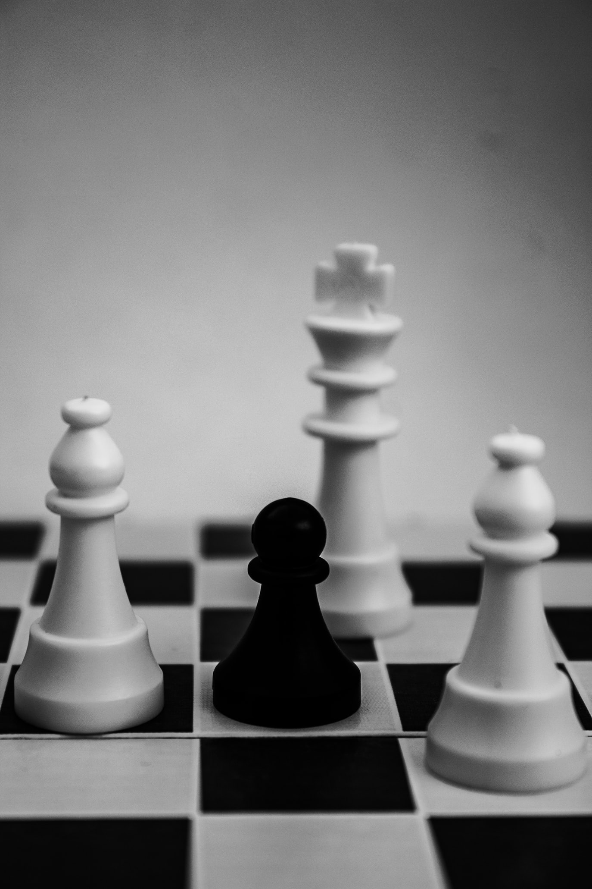

The Pawn is an amazing piece, but doesn't stand a chance against other pieces. It can trap other pieces, you can play en passant with it, and you can even promote it into any piece if it reaches the end of the board!
The reason I rank it this low is because if it is a 1 versus one against a pawn, the opponent will easliy win due to the lack of mobility of the pawn.
Overall, I find the pawn a useful pieces if you know how to play it well, but most pieces are better than it.
A picture with a black pawn in the middle.